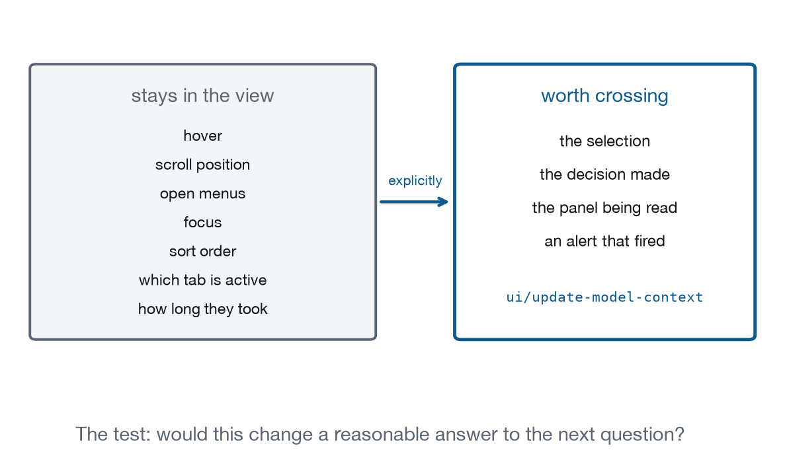

Chapter 22
Approval, Elicitation and the Context Boundary
Two capabilities the extension does not have, one principle it depends on, and an argument about what the model should never be told.
This is where the protocol runs out. Human approval has no message. Structured questions from a view have no message. Both are things real applications need, and both have partial answers elsewhere in MCP that stop short of the view: core MCP has elicitation, which flows server to host, and core MCP has a consent model that hosts implement for tool calls. Neither reaches a ui:// document. What this chapter describes is the shape you build in their absence, and how much of a security property that shape actually carries.
The chapter closes with the principle that has been implicit since Chapter 4: UI state is not model context, and the default is silence. That default is easily lost, because publishing feels free and helpful, and each individual update looks reasonable in isolation.
How do I require a human signature?
approval.requestCoreLevel 4Not standardisedRequire a human signature on a sensitive action.
- Ground
- No standard mechanism exists yet. The entry carries a workaround.
- Recipes
- Approval Center
- Demo
- lab-approval
Put the gate on the server. Core MCP is built on user consent, and the specification is clear that hosts must give users control over what is authorised. What the Apps extension does not give you is a way for a view to demand it. Your Approve button is an ordinary button in an untrusted iframe: nothing signs the click, nothing attests that a human made it, and the host never learns that an approval happened. The button’s only effect is the tool call your own code makes next, which the server would have had to trust anyway.
What that means in practice. Approval today is a convention, and its integrity depends on where the enforcement lives. The enforceable design is:
The server holds the gate. A refund tool does not perform a refund; it queues one and returns a queue id. A separate tool performs it, and that tool is visibility: ["app"] so the model cannot call it, and it requires the queue id. The view calls it after a human presses a button.
The view shows provenance. Who asked, on whose behalf, using which tool, with which arguments, and what the consequence is. Recipe 10’s card carries five provenance fields, and the reason is that an approval card without them is a dialog with a lever attached, and users learn to pull levers.
Extracted from from apps/recipes/r10-approval-center/server.js
provenance: {
"asked by": "the agent, in this conversation",
"on behalf of": "sam@meridian.example",
tool: "billing.refund",
arguments: "invoice=2026-0814 amount=1240.00 currency=USD",
"prior approvals": "none for this customer",
},The last field is the one that does the most work and is almost never present. “None for this customer” is what turns a routine approval into a pause, because it is the only line on the card that says anything about whether this request is unusual. Everything above it describes the request; that line describes the pattern the request sits in.
The host shows the boundary. prefersBorder and whatever chrome the host provides are what tell a user that this rectangle came from a server. The specification names phishing inside a view as a threat for exactly this reason.
The tool that refuses. Recipe 10 registers an approve tool whose only behaviour is to decline:
Extracted from from apps/recipes/r10-approval-center/index.html
bridge.registerTool({
name: "approve",
description: "Approve a queued action",
inputSchema: { type: "object", properties: { title: { type: "string" } } },
annotations: { readOnlyHint: false },
}, async () => ({
isError: true,
content: [{ type: "text", text:
"Approval requires a person. This view does not accept approvals over "
+ "the tool interface." }],
}));Registering a tool in order to refuse it looks strange until you consider the alternative. An agent that finds no approval tool will try something else, and what it tries may be a server tool that does not have the gate. An explicit refusal that states the rule is a better interface for a model in the same way it is for a person.
What a mechanism would look like. ui/request-approval from the view, answered by the host after the host itself asks the user, returning something the server can verify. The host is the only party in a position to render an authentic consent surface, because it is the only one the user has a trust relationship with.
Can I ask a structured question?
elicit.requestCoreLevel 4Not standardisedAsk the user a structured question mid-operation.
- Ground
- No standard mechanism exists yet. The entry carries a workaround.
- Recipes
- Approval Center
- Demo
- lab-approval
Core MCP has elicitation, which lets a server ask the host to collect structured input from the user in the middle of an operation. It also has a URL mode for out-of-band interactions, with a hard requirement that credentials never be collected in form mode: passwords, API keys, tokens and payment details must go through a URL the user can inspect.
That flows server to host. There is no view-to-host equivalent, so a view with a mid-operation question has two options. Ask in its own UI, which works and carries no more weight than any other pixels in an untrusted iframe. Or send ui/message and wait for a turn, which costs the flow.
The rule that survives regardless. Never collect credentials in a view. The elicitation specification’s prohibition on form-mode credential collection applies with more force here, not less: a form inside an untrusted iframe asking for a password is the phishing attack in the threat model, drawn by the application itself. If your flow needs authentication, it needs URL-mode elicitation from the server, or a link opened through ui/open-link into a real browser context where the user can see the address bar.

What should the model never be told?
agent.boundaryCoreLevel 4Yours to buildKeep hover, scroll, and sort out of the model's context.
- Ground
- The view implements it. Nobody else can.
- Recipes
- Approval Center
- Demo
- lab-approval
The Context Boundary. UI state is not automatically model context.
Hover, scroll position, open menus, focus, local sort order and transient selection stay private to the interface. None of them changes what a reasonable answer to the next question would be.
Only state that changes what a reasonable next answer would be should cross, and it crosses explicitly through ui/update-model-context and never by accident. Explicitly is the operative word: nothing about your interface is published unless a line of your code publishes it. :::
The demo has two counters: local events, and ui/update-model-context calls. Move the mouse over the card and drag the scrollbar for ten seconds. The first passes a thousand, because pointermove and scroll fire at the display’s refresh rate. The second stays at the number of decisions you made, which on that card is zero until you press Approve or Deny. The ratio between the two counters is the point of the whole section, and it is roughly three orders of magnitude in any interface a person actually uses.
Why the default is silence. Three reasons, and only the first is about cost.
Context is finite and shared with the conversation, so anything you publish displaces something else. Published state is not deletable in the way it feels: hosts may hold the last update until the next user message, and the model may reason from it for several turns. And some UI state is information the user did not intend to disclose. What somebody hovered over before deciding is a record of their hesitation, and a view that publishes it has told the model something the user would not have said.
The test. Would this change a reasonable answer to the next question?
| State | Publish? |
|---|---|
| Selection | Yes. It answers “why are these slow”. |
| Decision made | Yes. Recipe 10 publishes approve or deny. |
| Sort order | Only if the user may ask “what is at the top”. |
| Hover, scroll, focus | Never. |
Two failures. Under-publish and the assistant does not know what “these” means, which reads as stupidity. Over-publish and the window fills with near-identical snapshots, and answers degrade as the session runs. The second is harder to spot because nothing looks broken.
Why the view cannot enforce it
Be precise about this, because the queue-and-perform pattern looks like security and is only a convention. Knowing exactly what it does and does not buy is the difference between using it correctly and trusting it too far.
The view is HTML from a server, running in a sandbox, and its Approve button is an ordinary button. Nothing signs the click. Nothing attests that a human made it. A compromised view, or a view whose server was compromised, can call the performing tool directly without rendering anything at all, and the server cannot tell the difference because the call arrives over the same channel with the same credentials.
The pattern buys three things, and they hold under different assumptions. The first holds as long as the host honours visibility. The second holds as long as the server’s log is trustworthy. The third holds only as far as the user reads what is in front of them:
The model cannot approve, because the performing tool is visibility: ["app"] and the host must not put it in the agent’s tool list. That closes the case where a model talks itself into an action.
The audit trail is coherent, because queueing and performing are separate server-side events sharing an id, so the record shows what was requested, when it was authorised, and by which path it executed. The gap between those two timestamps is the only durable evidence anywhere in the system that a human paused, and it lives on the server, which is one more reason the gate has to live there too.
The user sees provenance, which is the difference between an approval and a reflex. Five fields naming who asked, on whose behalf, using which tool, with what arguments, and what was approved before, is enough for somebody to notice that this is the first refund ever issued to this customer.
What it does not buy is protection from a hostile view, and that requires the host to render the consent surface, which requires a message that does not exist. That is the finding, and it belongs upstream.
Conformance checks
- A view’s approval control has no protocol effect, and the enforcing gate is on the server.
- The tool that performs a gated action carries
visibility: ["app"]. - An approval tool exposed to the agent refuses.
- No credentials are collected in a view.
- Context updates carry decisions and outcomes, not interaction traces.
- Hover, scroll and sort produce no messages.
What to remember from Part III
Both parties can act and neither can see the other. The view cannot read the conversation. The host cannot read the view’s DOM, because allow-same-origin is absent and the frame’s origin is opaque. The agent cannot see the screen at all; every fact it holds about your interface arrived because a line of your code sent it.
Every capability in Part III passes a small, explicit, auditable amount of information across that gap: ui/message to start a turn, ui/update-model-context to replace a standing summary, tools/call in both directions for work that needs no turn, and sampling/createMessage for language the view needs but cannot generate. Four messages, each carrying a payload you wrote by hand.
approval.request and elicit.request did not get one, because both need the host to render a consent surface, and a message that lets a view demand host chrome is a message that lets a hostile view demand host chrome. That is a harder specification problem than it looks, which is a reason for its absence and not an excuse for building around it in private.